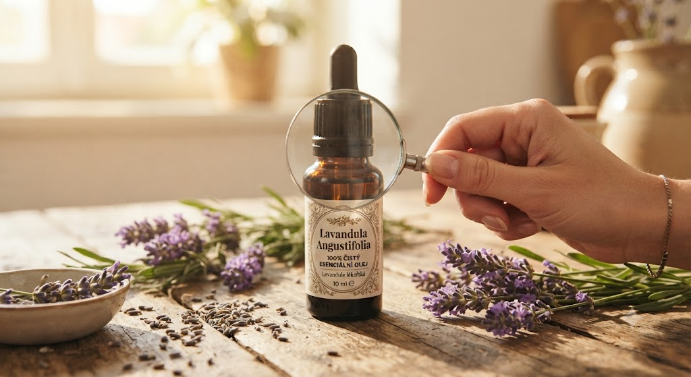

🌿 Lekce 3
na čem záleží při výběru
Ne každý olej označený jako „přírodní" je skutečně kvalitním esenciálním olejem. Ukážu vám, na co se při výběru zaměřit.

Ne každý olej, který je označený jako „přírodní", je skutečně kvalitním esenciálním olejem. Na trhu dnes najdete širokou nabídku produktů – v lékárnách, drogeriích, bio obchodech i na internetu. Mohou vypadat podobně, ale jejich kvalita se může výrazně lišit.
Právě proto je dobré vědět, na co se při výběru zaměřit. Kvalita esenciálního oleje ovlivňuje jeho vůni, vlastnosti i bezpečnost používání.
Některé levnější produkty mohou být ředěné, obsahovat syntetické vonné složky nebo jiné příměsi. Takové výrobky sice často příjemně voní, ale nemusí mít stejné vlastnosti jako čistý esenciální olej a u citlivých osob mohou způsobit podráždění pokožky.
Výroba kvalitních esenciálních olejů je náročný proces.
Na získání malého množství oleje je často potřeba velké množství rostlinného materiálu. Například u růže nebo meduňky mohou být na výrobu jednoho kilogramu esenciálního oleje zapotřebí stovky kilogramů až několik tun rostlin.
Proto bývá cena kvalitního oleje vyšší. Pokud narazíte na velmi levný produkt z rostliny, jejíž výroba je běžně nákladná, vyplatí se zjistit, čím je nižší cena způsobena.
Při výběru se zaměřte především na tyto body:
Latinský název rostliny — seriózní výrobce uvádí botanický název, podle kterého přesně poznáte, z jaké rostliny byl olej získán.
100% čistý esenciální olej — na etiketě by mělo být jasně uvedeno, že se jedná o čistý esenciální olej bez syntetických vůní, přidaných rozpouštědel nebo jiných příměsí.
Transparentní informace — důvěryhodní výrobci obvykle uvádějí způsob získávání, zemi původu nebo číslo šarže a jsou schopni poskytnout více informací o svých produktech.
Přiměřená cena — kvalitní esenciální olej nemůže být vždy nejlevnější. Cena často odráží náročnost pěstování, sklizně i samotné výroby.
Při nákupu si vždy ověřte, že kupujete skutečně esenciální olej, nikoli vonný (parfémový) olej.
Esenciální olej se získává přímo z rostlin a obsahuje jejich přirozené aromatické látky.
Vonný olej je směs vonných složek, která může být přírodního, syntetického nebo kombinovaného původu. Je určen především k provonění svíček, mýdel nebo interiéru a není náhradou za čistý esenciální olej.
Osobně používám esenciální oleje společnosti BEWIT, české firmy z Ostravy. Zaujala mě především jejich filozofie, důraz na kvalitu surovin a otevřený přístup k informacím o původu i výrobě jednotlivých olejů.
Oceňuji zejména:
získávání olejů šetrnými metodami – především parní destilací nebo lisováním za studena u citrusů,
důslednou kontrolu kvality pomocí laboratorních analýz,
důraz na kvalitní suroviny a šetrné zpracování,
100% přírodní složení bez syntetických parfemací,
netestování produktů na zvířatech.
Velký význam má také samotná sklizeň rostlin. Správný okamžik sběru, klimatické podmínky i šetrné zpracování po sklizni mohou výrazně ovlivnit výslednou kvalitu esenciálního oleje.
Kvalita esenciálního oleje má zásadní vliv na jeho vlastnosti i bezpečnost používání.
Při výběru se neřiďte pouze cenou nebo líbivým obalem, ale i původem rostlin, způsobem výroby a informacemi od výrobce.
Dobře zvolený esenciální olej je investicí do kvality, která se projeví nejen ve vůni, ale i v celkovém zážitku z jeho používání.
Další lekce: Kontrola kvality — pokračovat →